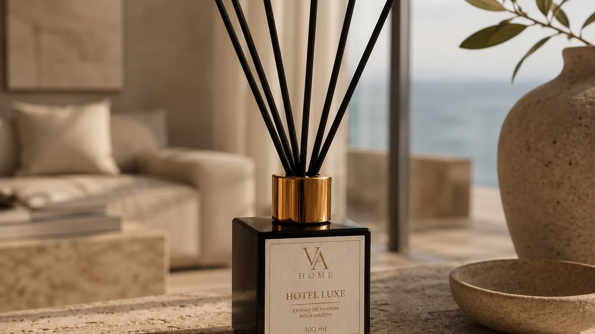

Готельні аромати для дому: атмосфера boutique hotel

Атмосфера дорогого готелю не пахне однією впізнаваною нотою. Вона складається з чистого текстилю, спокійного повітря, матеріалів інтер’єру та аромату, який не намагається бути головним.
Що люди називають «запахом дорогого готелю»
Найчастіше це не буквальна парфумерна асоціація, а поєднання кількох відчуттів: чистий льон, прохолодне повітря, м’які квіти, сухе дерево, мінеральність і відсутність побутових запахів. Аромат лише підсилює цю сцену.
Тому готельна композиція не повинна звучати як пральний засіб або різкий морський спрей. Їй потрібна текстура — сандал, мох, мускус, амбра чи делікатна квіткова база, яка робить чистоту м’якою.
Чистий текстиль, мінерали й повітря
Текстильний напрям нагадує свіжу білизну, але у преміальному звучанні він не має порошкової різкості. Мінеральний напрям додає відчуття каменю, солі та прохолодного SPA. Квітково-повітряний напрям створює світліший boutique hotel — із сонцем, живими квітами та відкритим простором.
Ці напрями можна поєднувати, але один має залишатися головним. Коли у формулі одночасно занадто багато озону, цитрусу, квітів і солі, чистота втрачає спокій.
Де розмістити готельний аромадифузор
Найкраще така композиція працює у передпокої, холі або вітальні — там, де формується перше враження. Не ставте флакон прямо біля дверей чи в сильному потоці повітря: аромат має розкриватися в кімнаті, а не залишати її разом із протягом.
У невеликому передпокої починайте стримано. У просторій вітальні або відкритому холі використовуйте рекомендований старт для стандартної кімнати й оцініть результат через 48 годин.
Як не перетворити clean luxury на стерильність
Дім відрізняється від лобі тим, що в ньому живуть. Тому готельний аромат має підтримувати особистий простір, а не стирати його. Залишайте місце запаху дерева, текстилю, кави, книжок і самого повітря.
Надмірна інтенсивність швидко перетворює чистоту на демонстративність. Краще, коли аромат зустрічає при вході й зникає з уваги, поки ви перебуваєте в кімнаті.
Два готельні характери VA HOME
Hotel Luxe створює більш класичну luxury-clean атмосферу: льон, озон, морська сіль, фрезія, сандал і мох. Це напрям для холу, передпокою та світлої вітальні.
Hotel Spring звучить живіше й сезонніше. Юзу, тюльпан, екзотичні квіти, чорний перець і сандал передають весняний boutique hotel із природним світлом. Один аромат — про об’ємну чистоту, другий — про сонячну легкість.
Готельна атмосфера починається не з аромату
Провітрювання, чистий текстиль, відсутність змішаних побутових запахів і вільний простір навколо дифузора мають таке саме значення, як формула. Аромат не замінює порядок — він завершує його.
Коли всі елементи працюють разом, дім не стає копією готелю. Він набуває тієї самої якості відчуття: спокою, зібраності й уваги до деталей.